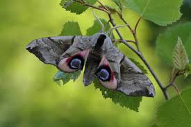

Бабочки
Бабочка — символ души, бессмертия, возрождения и воскресения, способности к перевоплощению, ведь это крылатое небесное существо появляется на свет, превращаясь из гусеницы.


Бабочка — символ души, бессмертия, возрождения и воскресения, способности к перевоплощению, ведь это крылатое небесное существо появляется на свет, превращаясь из гусеницы.